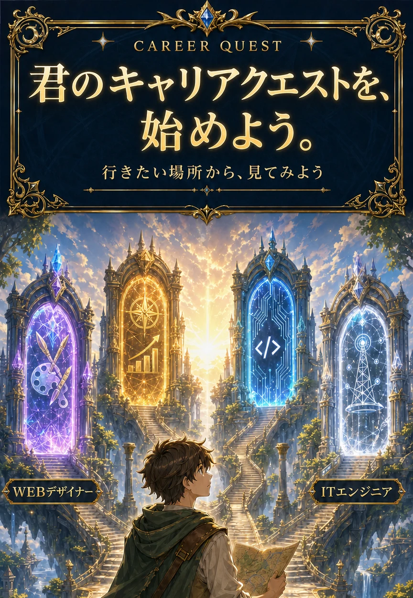
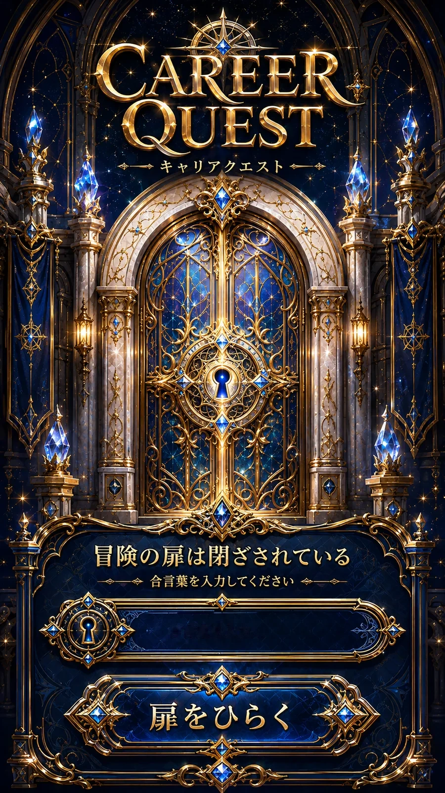
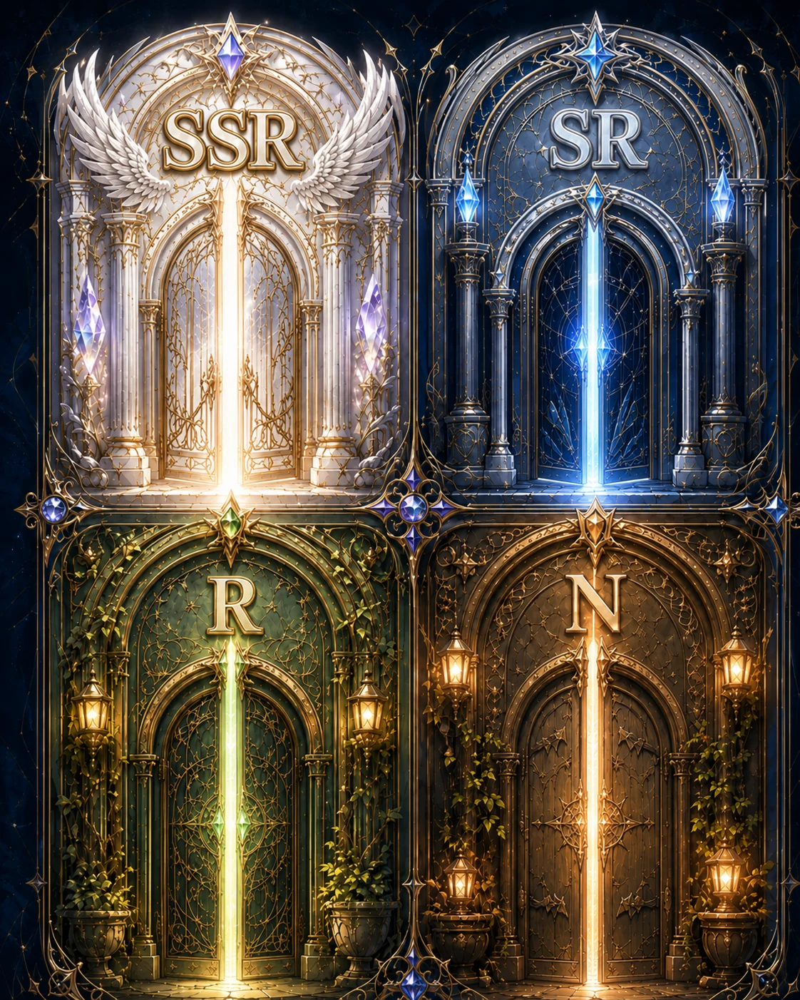

世の中には、まだ知らない仕事がたくさんある。
今すぐ開ける扉もあれば、
経験やスキルという装備を集めて開く扉もある。
今の自分から、未来へ続くルートを探そう。

合言葉を入力してください

世の中には、まだ知らない仕事がたくさんある。
今すぐ開ける扉もあれば、
経験やスキルという装備を集めて開く扉もある。
今の自分から、未来へ続くルートを探そう。
THE WORLD OF WORK
QUEST 01 / CHOOSE YOUR GATE
扉をタップすると、開くために必要な装備をうさぎが教えてくれるよ。
扉のランクは、今ある装備で挑みやすい扉の目安。経験値を集めれば、次の扉が開く。

合否を決める質問ではないよ。今の自分に近いものを選ぼう。
↓ スクロールして、ルートを確認
YOUR STARTING ROUTE
FIRST QUEST
今の装備で始められるルートが、次の扉へ進むための経験値になる。
@satomi.ohtagaki